A tymczasem w Cameracie...
.
2014-11-11
Przed południem delegacja naszego chóru złożyła kwiaty pod pomnikiem Odrodzenia Polski w Wieliczce.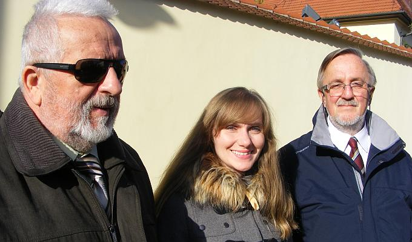 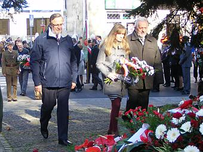 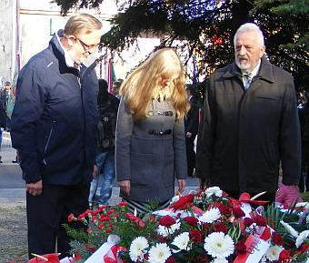
Jest też nasza Ania „górniczka”.
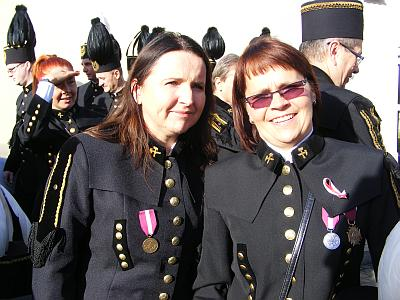
Po południu spotykamy się w Mieście Solnym na krótkiej próbie przed koncertem.
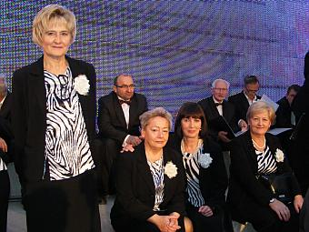 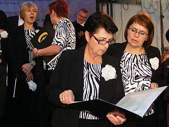
Już czekamy na występ.
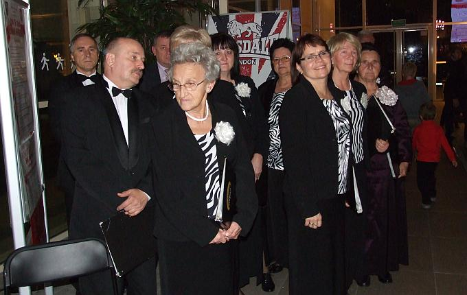
Dzisiaj jest koncert z okazji Narodowego Święta Niepodległości w wykonaniu Wielickiej Orkiestry Kameralnej pod dyrekcją Piotra Piwko
oraz chórów Camerata oraz Jana Pawła II w Strumianach.
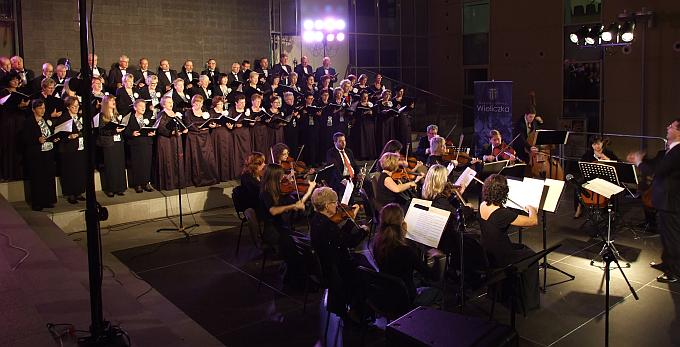
Jako solistka występuje Izabela Szota, nasza „Ułanka” i Dyrygentka.
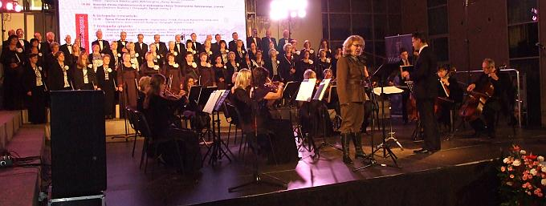
To nie koniec uroczystości w dniu dzisiejszym, gdyż mamy jeszcze jubilatkę, nasza Dyrygentka ma dzisiaj urodziny a my mamy dla niej życzenia i…
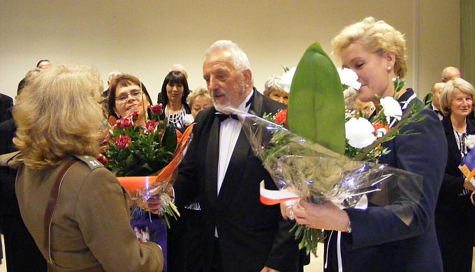 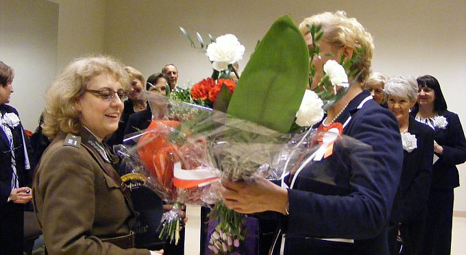
śpiewaną niespodziankę. Tonację podaje Dyrygentka, ale dyryguje Ewa, która jest autorką tekstu. Śpiewamy na melodię znanego nam wszystkim utworu „Pieśń” (którym byliśmy „dręczeni” przez ostatnie miesiące, przez naszą Dyrygentkę).
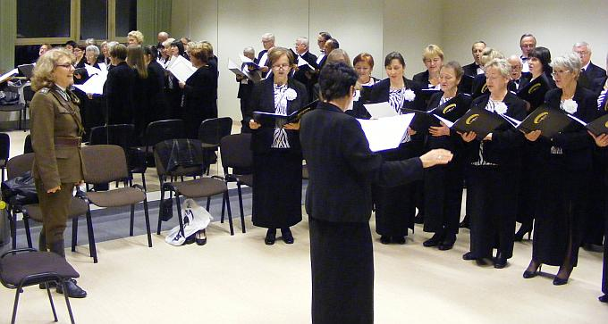 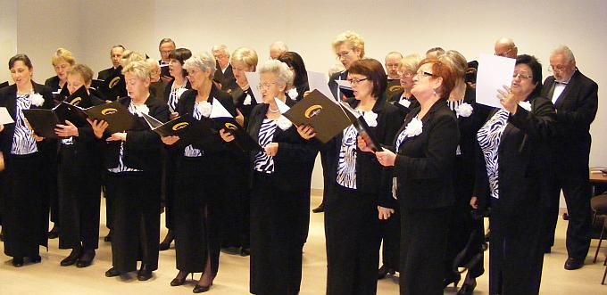
Jak widać tekst się podobał :)
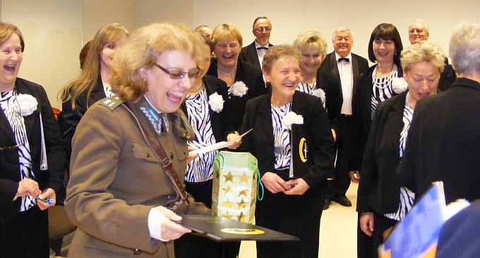
A teraz przeczytajcie, co nas tak rozbawiło:Dedykacja:
Szanownej Jubilatce, naszej Dyrygentce Izabeli Szocie, z najlepszymi życzeniami urodzinowymi, wszyscy członkowie Chóru Camerata dedykują poniższy utwór.
Nowa Pieśń
Czego chcesz od nas Izo !
Za Twe z nami męki.
Czego za Twe starania
trudy i udręki.
Ogół Cię nie docenia,
wstyd przynosi Tobie
i na próbach, na galach
i w każdym sposobie.
Kasy, też wiem nie pragniesz,
tylko naszej sławy.
Cokolwiek, więc wymyślisz
daje plon ciekawy.
Wdzięcznym Cię tedy sercem
Izo przepraszamy,
bo nad to przystojniejszej ofiary nie mamy.
Tyś część swojego życia
na chór poświęciła
i swoimi planami
wszystkiś zaraziła.
Tyś fundament pokładła
na muzycznej niwie
i przykryłaś jej nagość
widną, rozpaczliwie.
Za Twoim rozkazaniem
chór w karności stoi
A zamierzonych granic
przekroczyć się boi.
Rzeki słów wykrzyczanych
wielką wartość mają.
Przeto więc wszyscy w chórze
swoje miejsce znają.
Tobie k'woli rozliczne nuty wena rodzi.
Tobie k'woli co chwila nowy ton przychodzi.
Pieśni, hymny i arie w mp 'trójki” mienisz
A my do gotowego zasiąść zachęceni.
Z Twej łaski wielka siła na mdłe twarze pada
I nagle wielkim głosem rozbrzmiewa gromada.
Z Twoich sztuk każdy śpiewak, czerpie moc radości
a Ty ją jeszcze wspierasz w swej szczodrobliwości !!!
Czego chcesz od nas Izo!!!
za Twe z nami mę - ę – ę- ę – ki .
(11 listopad 2014 rok, Ewa Roeske-Tracz)

© Stowarzyszenie Muzyczne Chór Camerata Wieliczka
Projekt i wykonanie:  Prowadzenie strony: Małgorzata Wysocka-Cebula
Prowadzenie strony: Małgorzata Wysocka-Cebula